MOTEBOX
A god game: watch a small world run, and change it.
by austinio7116 · for Thumby Color
god simulator
128×112 world
48 powers
35 techs
445 people
save & resume
When you start a game the world is already running. Four peoples already have towns and farms, and are already wary of each other.
You do not play a character. You have a cursor, a supply of Faith, and 48 powers to spend it on — anything from a rain shower to a nuclear strike. The rest happens by itself: farmers plant and harvest, lords grow old and are replaced, kingdoms fight, towns burn down, and a log records it.


A good way to begin is to watch. Set the speed to ×3, read the two lines of news at the bottom of the screen, and see which town is growing fastest. Then decide whether to help it.
Hold RB to switch between them. It is the same world either way.
The whole map at once. Each kingdom’s land is tinted its colour and capitals are marked. You can also switch the map to show tech level, religion or town size instead of borders (MENU → MAP). Use this to see where borders are moving.
About 16 by 14 cells of ground with everyone drawn individually — farmers, soldiers, elders, the lord in a crown. Buildings show their age: a wooden hall becomes a stone keep and then a castle; dirt tracks become cobbles and eventually tarmac. Use this to see why the border moved.
The bottom two lines show the last two things that happened. Long lines scroll sideways so you can read them. In the log screen you can select an entry to jump to where it happened.
Everyone is simulated separately: a name, an age, a job, a partner, a mood, some personality traits, and whatever they have decided to do right now.
They choose what to do by comparing their options — run away, eat, work, find a partner, fight, put out a fire — so a crowd is hundreds of separate decisions rather than a script. Things you will see them doing:
Fetching wood, stone, iron and gold. Sowing and harvesting. Paving streets. Putting up whatever the lord has decided to build. Nothing gets built in a town unless someone walks there and builds it.
Villagers who are fed and have no work take a break: a walk along the streets, a trip out of town, a game by the monument, or a lie in the sun. It makes them happier, and happier people have more children and are more loyal.
Soldiers stay near their lord and drive off wolves that come close. Priests sit at the temple and cheer up whoever is nearby. Traders take caravans to other towns.
Humans, elves, dwarves and orcs all live in the same world and build the same things, but their towns are laid out differently and their sprites are their own. The last three only appear through disasters and powers: skeletons rise from graveyards, ghosts appear in ruins, and demons are summoned.


A town is streets with buildings along them, and everything in it was carried there by someone.
The lord picks what to build next based on what the town is short of. The town’s stores pay for it. Then it stays as an outline until a builder walks over and puts it up. The same is true of paving, new fields, planted trees and monuments. A small wooden stake on the ground means work that is waiting for someone to do it.
Each town uses one of five street plans. Races tend towards particular ones, but it is not fixed:
| Plan | What you see |
|---|---|
| Grid | A main street with side lanes. Block size, spacing, offsets and lane length all vary, so two grid towns still look different. |
| Radial | Streets radiating from the centre with a ring road around them. |
| Ribbon | One long street with houses down both sides. |
| Organic | No plan. A lane wanders out from the centre and side lanes branch off it. |
| Green | Houses around an open common. Nothing is allowed to build on the common. |
Houses and farms first, then a stone hall. The stone hall is what allows walls, a barracks and a temple. After that the town works up the list as its kingdom learns new technology: granary, market, library, foundry, college, hospital, factory, station, power station, missile silo.


The fire pit appears when a town is founded. Everything else has to be chosen by the lord, paid for out of the town stores, and built by a villager.
Enemy soldiers and wild animals cannot walk through a wall. The town’s own people can. An attacking army has to stop outside, and soldiers standing next to a wall will break through it after a while. Towers on the wall shoot at any enemy within four cells.
There are four ways to feed a town, and you can see all four happening.


A farmer walks to an empty field and sows it. The crop grows on its own. A farmer comes back, harvests it, and carries it home. Each field is on its own timer, so a belt of fields shows bare earth, seed, shoots, full crop and ripe crop all at the same time. Casting rain moves every field in range on one stage.
Deer, boar, sheep, hens and goats can be eaten. Wolves, wild dogs, snakes, crabs and bats hunt other animals, and will attack people who are away from their own land. Predators and prey have separate population limits, so killing off the wolves does not fill the world with deer.

A town with a farm buys two animals. The flock breeds up to the size the town can feed, produces a little food every year, and gets eaten when the store runs low. Wolves will not come into the pasture.
When food runs short, villagers hunt wild animals — deer, boar, goat, hen, rat. One carcass is worth about two and a half berry bushes. Hunt too much and the wildlife starts to run out.
A dock lets villagers fish the water next to it. They take a boat out into the harbour and land the catch at the quay — ten food. Fishing off the sand when no boat is free is worth four. A coastal town can live mostly on fish; an inland one gets nothing from the building.
Each town has a lord, and the lord is one of its villagers. You can find them at the hall, or from the town screen.

Traits matter too. An ambitious lord builds a monument to himself early and costs his kingdom a lot of loyalty. A vengeful lord in a capital makes wars more likely.
Lords age and die like anyone else, and the town picks a new one from its own people. It prefers the old lord’s family while any of them are still alive, so one family can hold a town for generations. A lord can also be killed by a wolf or in a war, which is why soldiers stay close to them.
You can spend Faith on a lord. 50 Faith adds 20 to one stat. This is usually the cheapest way to change what a kingdom does, because most of a town’s decisions come from the person in the hall.
A kingdom is a group of towns, and towns can change hands.
Kingdoms weigh up how close they are, how big their armies are, past grudges, how tired they are of fighting, the temper of the lord in the capital, and what the other side has. A kingdom with no iron next to one with plenty is much more likely to attack. A kingdom with only one town will not start a war.
If enemy soldiers reach a town’s hall and its own people are not there to defend it, the town changes owner. It keeps its buildings, fields and people, but flies a new flag and starts with very low loyalty — so you may have to hold it.
Loyalty rises or falls depending on how far the town is from its capital, how tired of war the kingdom is, how happy the town is, and who its lord is. If loyalty stays below zero long enough, the town breaks away as a new kingdom and immediately goes to war with the one it left. Distance matters most, so large empires tend to lose their outer towns on their own.
Caravans carry spare food and materials to towns that need them. Inside a kingdom it is free; across a peaceful border it is a sale and brings back gold. Two kingdoms with a common enemy, or a shared race or religion, and a capable lord in the capital may become allies.


Once a kingdom knows seafaring, water stops being a wall.
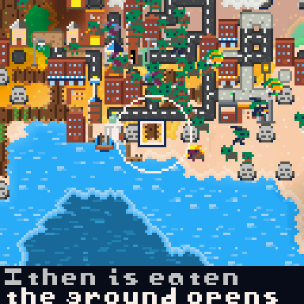
A coastal town builds a jetty on the shore. It is where fish are landed, and where anybody leaving by sea takes ship. A town can have two.
Everything that happens at sea needs one. Lose the dock and the town is landlocked again.
A town with a dock settles across water as well as overland, and it reaches much further — so islands get settled and an archipelago fills up instead of one landmass filling and stopping. Four colonists board a ship and the new town is empty until they land.
When a town needs iron or stone that is not in its valley, it sends one villager to the nearest of it in the world. If the way is across water they go by ship, and come home the same way. Without a dock the party is not sent at all — they could not get there.
A smack for short hops, a caravel for a real crossing. Which one sails depends on how far it is, so a strait and an ocean do not look the same.
You can watch the whole thing: someone walks through the town to the quay, boards, crosses, puts in on the far shore and walks the rest of the way. Ships steer around coastlines rather than through them, and a ship that is beaten by the geography lands wherever it has got to and its passengers walk from there. It costs them a season, not their lives — a ship carries provisions, so a crossing makes people hungry rather than killing them.
35 technologies, each needing two others before it, arranged in eleven layers — and which way through them a kingdom goes is decided by its lord and its land.
Kingdoms earn research from their people, their temples, libraries and colleges, and their trade. What a kingdom knows decides what its towns can build, what its soldiers throw, how far they can throw it, what its roads are made of and how much a pair of hands brings home — so you can usually tell a kingdom's era, and its character, by looking at one of its towns.
A rung needs both of the rungs that feed it, and sits one layer below the deeper of the two — so the layers are not eras, they are how far down the dependencies you are. The nine eras are a colour here: a kingdom's era is simply the latest one it has reached anything in.
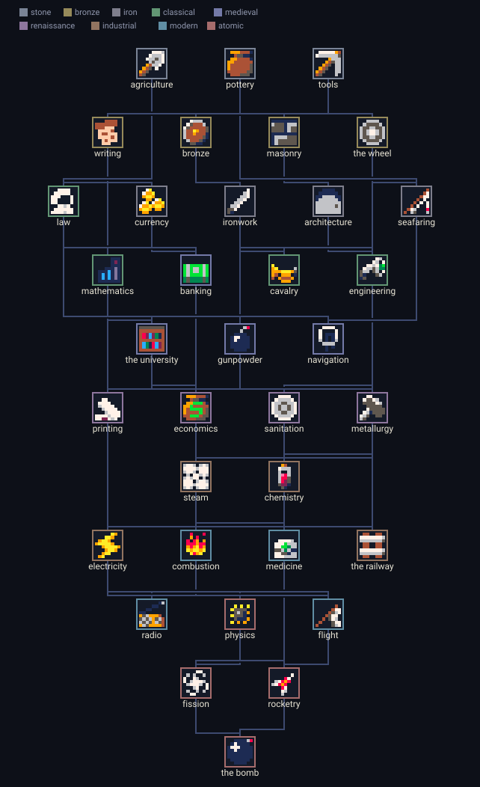
The lord in the capital chooses the branch. A builder reaches for masonry, architecture and engineering; a warmonger for bronze, ironwork and gunpowder; a talker for writing, law, currency and banking. The ground matters too: iron in the hills pushes a kingdom to work it, a long coast pushes it to sea, and a kingdom with no iron takes to the sea to buy it instead. And it has momentum — a realm that has spent two rungs on war spends the third there as well.
So two kingdoms in the same world hold different technologies for most of the game. A long-lived one eventually learns nearly everything; the interesting part is the order, and what it means in the meantime.
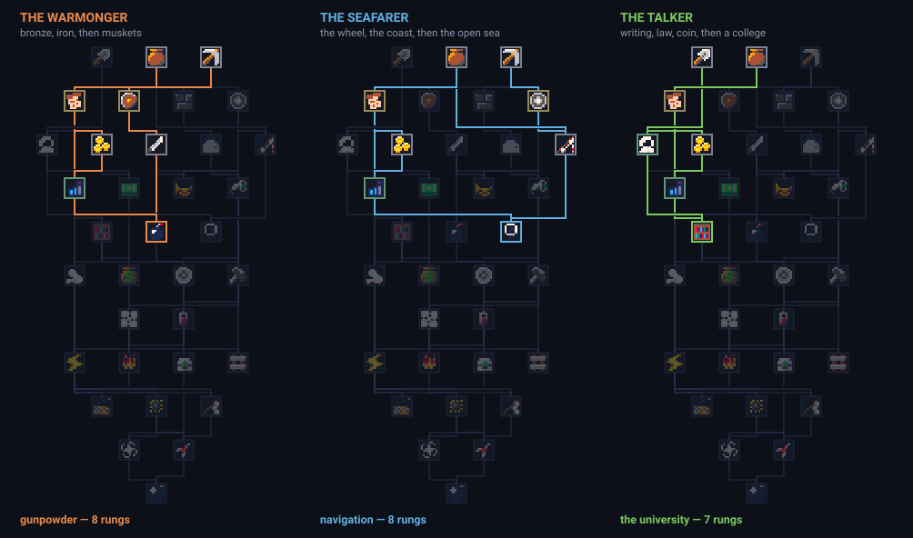
Press B on one of your own towns, open THE KINGDOM, and press A on RESEARCH. The same tree scrolls in the same layout: the D-pad moves between rungs, the links of the rung you are on light up, and the two lines at the bottom name it and say where it stands — known, the price in research if it is in reach, or which prerequisite is missing if it is not. A prerequisite too long for the line scrolls past rather than being cut off. The frame around each icon is its era colour; a rung the kingdom cannot reach yet is dimmed into the background, and the one it is working towards has a pale ring.
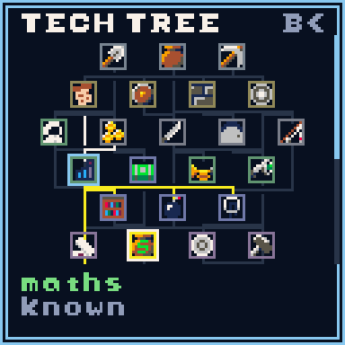
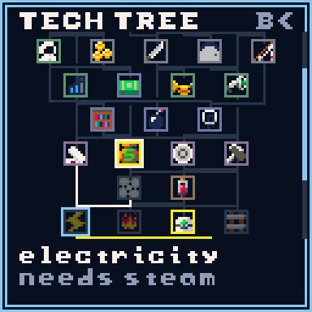
In the order the tree gives them: what each one needs before it, what it costs in research, and what it changes.
| Technology | Era | Needs | Research | What it changes |
|---|---|---|---|---|
 agriculture agriculture | stone | — | 165 | Half again from every harvest. |
 pottery pottery | stone | — | 180 | A granary, so a town can hold food through a bad year. |
 tools tools | stone | — | 135 | A stone hall, a mine and a woodcutter: the first three things a town can build. |
 writing writing | bronze | pottery | 330 | A temple and a library, and +1 research from each town. |
 bronze bronze | bronze | tools | 300 | A barracks, and arrows instead of thrown stones. |
 masonry masonry | bronze | tools | 285 | Cobbled streets, walls, towers and a castle. |
 the wheel the wheel | bronze | tools | 270 | Carts: half again carried, of anything, on every trip. |
 law law | classical | writing + agriculture | 675 | Courts: +18 loyalty, so distant towns stay yours. |
 currency currency | iron | writing | 465 | A market, and gold coming in. |
 ironwork ironwork | iron | bronze | 480 | Iron tools: half again of wood and of stone. |
 architecture architecture | iron | masonry | 510 | A quarter off the timber and stone of every building. |
 seafaring seafaring | iron | the wheel + pottery | 450 | Docks and ships — and colonies across open water. |
 mathematics mathematics | classical | writing + currency | 660 | +2 research from each town. |
 banking banking | medieval | currency + law | 885 | Markets pay double. |
 cavalry cavalry | classical | ironwork + the wheel | 630 | Horses: twice the closing speed, and harder hits. |
 engineering engineering | classical | architecture + ironwork | 690 | Flagstones and fountains. |
 the university the university | medieval | mathematics + law | 320 | A college, and +4 research from each town. |
 gunpowder gunpowder | medieval | ironwork + mathematics | 930 | Muskets. |
 navigation navigation | medieval | seafaring + mathematics | 900 | Colonies far further out to sea. |
 printing printing | renaissance | the university + writing | 1200 | +4 research from each town. |
 economics economics | renaissance | banking + the university | 1170 | Markets pay half again on top of banking. |
 sanitation sanitation | renaissance | the university + engineering | 1230 | A hospital. |
 metallurgy metallurgy | renaissance | gunpowder + engineering | 1290 | A foundry, and shells. |
 steam steam | industrial | metallurgy + economics | 1575 | A factory, apartments and tower blocks. |
 chemistry chemistry | industrial | sanitation + metallurgy | 1620 | A plague runs its course a third quicker — twenty days rather than thirty. |
 electricity electricity | industrial | steam + printing | 1680 | A power station, street lights, city blocks, and +6 research from each town. |
 combustion combustion | modern | steam + chemistry | 2100 | Tarmac. |
 medicine medicine | modern | sanitation + chemistry | 2160 | A plague is short and rarely kills — twelve days rather than thirty. |
 the railway the railway | industrial | steam + engineering | 1650 | A station. |
 radio radio | modern | electricity + printing | 2070 | +6 research from each town. |
 physics physics | atomic | electricity + mathematics | 2850 | Towers reach five cells, and hit harder. |
 flight flight | modern | combustion + electricity | 2250 | Aircraft: half again the reach in war, and expeditions cross water with no dock. |
 fission fission | atomic | physics + chemistry | 3450 | A power station is worth double: twelve research rather than six. |
 rocketry rocketry | atomic | flight + physics | 3300 | Missiles. |
 the bomb the bomb | atomic | fission + rocketry | 4500 | A missile silo — and a kingdom that will use it. |
A kingdom that is doing well finishes the tree somewhere in the third or fourth century. One that is doing badly can spend the whole game in the iron age.
48 powers in six pages. They cost Faith, which builds up from how happy your followers are and how many temples they have built. There is a maximum you can hold.
Tap LB to open the wheel, the D-pad to choose, LB and RB to turn the page, A to take a power and B to back out. Taking a power only selects it — you cast it with A on the map, wherever the cursor is.

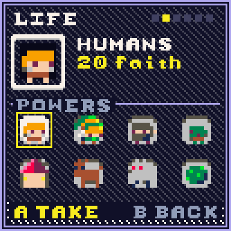
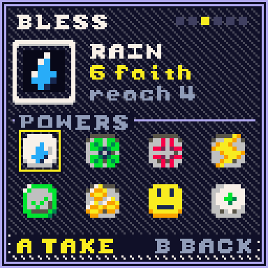
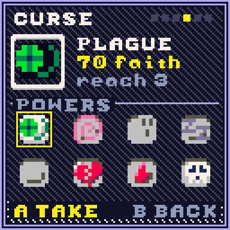
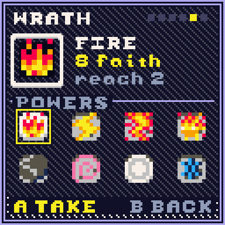
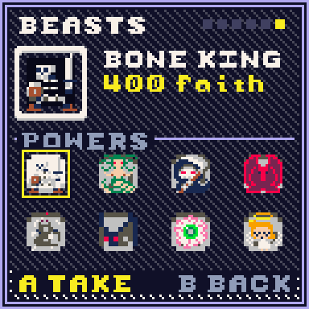
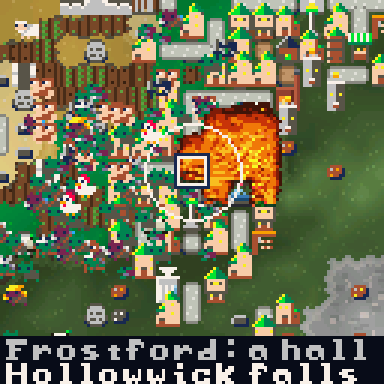
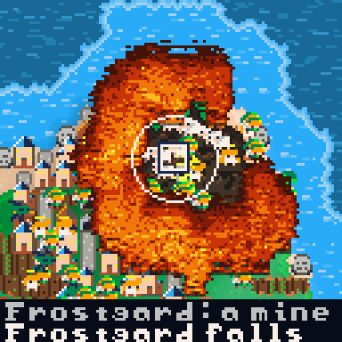
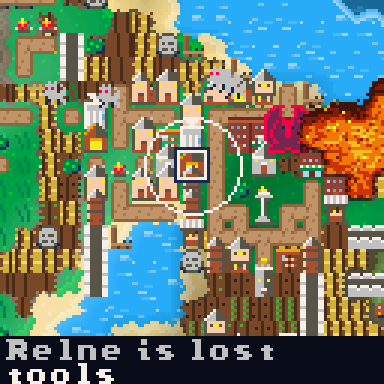
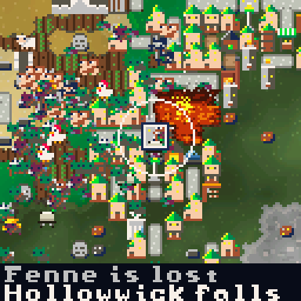

If a power has no effect — a blessing with nobody near it, or a village on ground that will not take one — you get the Faith back.
Most powers work on an area, and the reach is shown on the page beside the price. A few are brushes: hold A and keep casting.
There are eight. An army with enough soldiers can kill any of them. The angel is the only one that helps rather than attacks.

All forty-eight, page by page. Reach is the brush radius in cells — "one cell" means it lands where the cursor is. The last column is what a single cast measurably did in a test world, so the numbers are the game's, not an estimate.
| Power | Faith | Reach | What it does | What one cast did |
|---|---|---|---|---|
| LAND — Shaping the ground. Held down, these paint — the rest are single casts. | ||||
 RAISEpaints RAISEpaints | 2 | 2 | Lifts the ground a step. Enough of it makes hills, then mountains, and water drains off it. | about 25 cells a cast at reach 2 |
 MOUNTAINpaints MOUNTAINpaints | 8 | 2 | Puts rock and peaks down directly, whatever was there. | clears what stood on it — four objects in the measured cast |
 FORESTpaints FORESTpaints | 4 | 3 | Grows woodland, which is where timber and game come from. | filled a reach-3 patch, and put three trees on it |
 GRASSpaints GRASSpaints | 2 | 3 | Plain grass: the ordinary ground everything else is measured against. | cleared eleven objects out of the way |
 LOWERpaints LOWERpaints | 2 | 2 | Sinks the ground a step. Low enough and it floods. | about 25 cells a cast |
 WATERpaints WATERpaints | 4 | 2 | Water directly — a lake, a channel, or a moat. | drowned twelve objects in the measured cast |
 DESERTpaints DESERTpaints | 3 | 3 | Sand. Nothing grows and nobody settles. | a reach-3 patch |
 ROADpaints ROADpaints | 1 | 1 | A road, which is how far a town can reach and how fast anyone moves. | one cell at a time; hold A to draw |
| LIFE — Putting things in the world that were not there. | ||||
 HUMANS HUMANS | 20 | one cell | Four people, grown, standing where you cast. | 4 people, at full health and content |
 ELVES ELVES | 20 | one cell | Four elves. They live longer and prefer the woods. | 4 people |
 DWARVES DWARVES | 20 | one cell | Four dwarves. Tougher, and drawn to the hills. | 4 people, one born tough |
 ORCS ORCS | 20 | one cell | Four orcs. They fight harder and quarrel sooner. | 4 people |
 VILLAGE VILLAGE | 90 | one cell | A whole settlement: a hall, people in it, food to start on, and its own kingdom if nobody claims the ground. | a village of 15 with 30 food, and a new kingdom |
 HERD HERD | 10 | 1 | Grazing animals — sheep, hens, deer. A town that owns them keeps them. | 6 animals |
 WOLVES WOLVES | 10 | one cell | A pack. They hunt whatever is nearest, including people. | 3 wolves |
 PLANTSpaints PLANTSpaints | 4 | 3 | Bushes, flowers and crops on the ground you cast over. | 19 plants over a reach-3 patch |
| BLESS — Helping what is already there. | ||||
 RAINpaints RAINpaints | 6 | 4 | Rain over a wide area: it waters crops and puts fires out. | watered a reach-4 patch; pixel rain, and it splashes |
| FERTILITY | 25 | 4 | Makes the ground fertile and the people in it likelier to have children. | the patch, and everyone standing in it |
 HEAL HEAL | 15 | 3 | Closes wounds on everyone in reach. | 60 points of healing shared out |
| INSPIRE | 60 | one cell | A whole technology, given to the kingdom that owns the ground. | +1 tech, and the chronicle records the inspiration |
 PEACE PEACE | 100 | one cell | Ends every war in the world at once and empties the mustering yards. | 6 wars ended, 39 towns stood their levies down |
| GOLD VEIN | 45 | 2 | Ore in the ground where you cast it — gold if the rock allows. | 5 deposits |
 BLESS BLESS | 80 | 3 | Everyone in reach becomes blessed: +2 Faith each, for good. | the whole patch, permanently |
 RESURRECT RESURRECT | 120 | 2 | Raises the dead out of the graves in reach. They come back blessed and chosen. | 2 raised from 2 graves |
| CURSE — Harming what is already there. | ||||
 PLAGUE PLAGUE | 70 | 3 | Sickness on everyone in reach, and they pass it on. | the patch; it spreads from there |
 MADNESS MADNESS | 55 | 2 | They attack anyone, including their own. | the patch |
 CURSE CURSE | 40 | 3 | Cursed: -2 Faith each, and it counts as an illness. | the patch |
 WEAKEN WEAKEN | 25 | 2 | Takes 40 health off everyone in reach, and lifts what protected them. | 760 points of damage; two died of it |
 FAMINE FAMINE | 60 | 3 | Strips the crops and stores out of the ground. | the patch, and two objects with it |
 BARREN BARREN | 45 | 3 | No more children from anyone in reach. | the patch |
 GRUDGE GRUDGE | 35 | one cell | The kingdom that owns this ground declares war on a neighbour. | 2 wars started |
 MARK MARK | 30 | 2 | Marked: every hunting thing comes for them, and their own land will not protect them. | the patch |
| WRATH — Disasters. They keep going after the cast: a fire spreads, a vent erupts again. | ||||
| FIREpaints | 8 | 2 | Sets fire to it. Fire spreads by itself through anything dry. | 3 objects burnt in the first moment, and it kept going |
| LIGHTNING | 12 | one cell | A bolt on one cell: it kills, it burns, and it leaves a scorch mark. | 4 dead, 400 points of damage |
 METEOR METEOR | 120 | 3 | A strike that flattens the ground and everything on it. | 28 objects gone, and a crater |
 VOLCANO VOLCANO | 200 | 1 | Raises a vent that goes on erupting after the cast. | 28 objects gone, a mountain raised, and a vent that keeps venting |
 QUAKE QUAKE | 60 | one cell | Throws the ground up and down and shakes buildings apart. | 12 objects down |
| TORNADO | 90 | one cell | A twister that walks and takes what it passes. | 7 objects, and it wanders off |
 THE BOMB THE BOMB | 500 | one cell | A warhead: the blast, the fires, the fallout and the graves. | 3 dead outright at the middle, and the ground poisoned |
 FREEZEpaints FREEZEpaints | 30 | 3 | Frost over the area. It stops fires and kills crops. | the patch; 4 objects killed off |
| BEASTS — Summoning something that walks off and acts on its own. | ||||
 BONE KING BONE KING | 400 | one cell | A skeleton titan. It walks, it kills, and the dead it leaves get up. | 17 dead in the measured cast |
 MEDUSA MEDUSA | 300 | one cell | She looks at people and they stop being people. | 35 dead — the deadliest thing on the wheel |
 REAPER REAPER | 360 | one cell | It walks and harvests. Graves follow it. | 7 dead, and 5 new graves |
 DRAGON DRAGON | 320 | one cell | It flies, it burns what it passes, and it holds its breath over water. | 2 dead and a wide burn |
 GOLEM GOLEM | 240 | one cell | Stone, slow and unstoppable: it breaks buildings before it breaks people. | 19 dead, 8 buildings down |
 SWARM SWARM | 160 | 2 | Twelve small hungry things at once. | 12 creatures |
 THE EYE THE EYE | 280 | one cell | It watches, and what it watches goes mad. | madness across everything near it |
 ANGEL ANGEL | 420 | one cell | It heals and blesses whatever it passes, and nothing touches it. | 620 points of healing |
Looking things up is a large part of the game. RB moves out one level each time: from a person to their town, then their kingdom, then the world.
Press B on any cell. Lists everyone and everything on it, so you can pick which one of a crowd to look at, plus the resources and the ground itself.
Name, family, age, job, partner, mood, hunger, health and traits. Press A to spend Faith on their health, hunger, mood or personality.
Their three stats, what those stats currently mean for the town, and 50 Faith to raise one.
Size, population against available housing, religion, its lord, its stores and what has been built. Press A for the lord.
Era, research progress, a bar for each town, and who it is at war with.
Every kingdom with its era and number of towns, and the total population.


Press A on anybody's page and you get a list of gifts, priced in Faith. It is the cheapest way to change one life rather than a whole region, and several of the traits above can only be had this way.
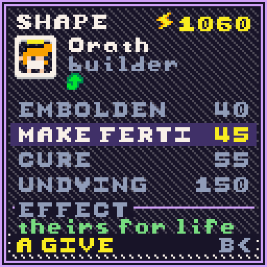
The EFFECT line reads the person in front of you: already whole, not hungry, already theirs. A gift that would do nothing says so before you pay for it.
| Gift | Faith | What it does |
|---|---|---|
| MEND | 30 | heals them to full |
| GLADDEN | 25 | lifts their mood, which is what the tithe runs on |
| FEED | 20 | fills their belly — hunger is the commonest cause of death |
| EMBOLDEN | 40 | makes them brave |
| MAKE FERTILE | 45 | makes them fertile |
| QUICKEN | 50 | makes them fast |
| TOUGHEN | 50 | makes them tough |
| CURE | 55 | lifts a plague or a curse |
| BLESS | 60 | makes them blessed |
| RAISE UP | 90 | makes them the lord of their town |
| UNDYING | 150 | they stop dying of old age. The dearest thing you can do for one person, and the only way a bloodline you have followed for two centuries stops ending. |
A lord's page has its own spending: 50 Faith adds 20 to one of their three stats, which is usually the cheapest way to change what a whole kingdom does.
A town's screen shows five stores, each with a gauge that runs green to red as it empties. Iron is the one that most often stops a town building: a barracks costs four of it, and a town with none can look like a town that has simply stopped.
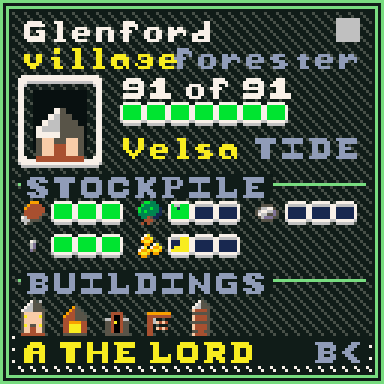
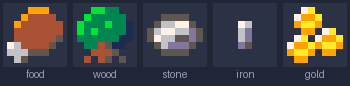
A person's page shows their traits as icons, up to five, and then a count. These are the ones with a picture:
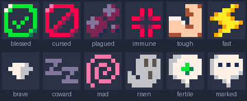
| Trait | What it does | How they get it |
|---|---|---|
| tough | +8 damage in a fight, +5 against a monster | born, inherited, or the TOUGHEN gift |
| fast | half again the walking speed | born, inherited, or the QUICKEN gift |
| brave | +40 to the will to fight; wanders further from home | born, inherited, or the EMBOLDEN gift |
| coward | −120 to it, and much likelier to run | born or inherited |
| greedy | eats more before it counts as fed | born or inherited |
| loyal | +20 to the will to fight, and readier to haul | born, inherited, or held by a lord |
| ambitious | a lord who builds above what the town has earned | a lord's own temper |
| vengeful | a lord much readier to go to war | a lord's own temper |
| fertile / barren | +25 / −60 on the chance of a child | born, inherited, or the MAKE FERTILE gift |
| genius / stupid | a priest's research is worth three, or nothing | born or inherited |
| pious | doubles the Faith they give you | born or inherited |
| regenerating | heals three a tick instead of one | born or inherited |
| veteran | +6 damage | earned: three kills |
| blessed / cursed | +2 / −2 Faith each, and a curse counts as sickness | the BLESS and CURSE powers, or the BLESS gift |
| chosen | +3 Faith, and they never run from anything | raised from a grave by RESURRECT |
| marked | every hunting thing comes for them, hungry or not, and their own land does not protect them | the MARK power |
| immortal | does not die of old age | the UNDYING gift, 150 Faith |
| plagued / contagious | dying of plague, and spreading it | the PLAGUE power, or catching it |
| immune | cannot catch plague again | surviving it |
| mad | attacks anyone | the MADNESS power |
| risen | came back from the dead | rising from a grave on its own |
One newborn in twelve is born with a trait, and a child otherwise inherits every trait its parent had, with a one-in-eight chance that one of them flips. That is what makes a bloodline worth following: a line of tough, pious farmers is something you can watch happen.
Five speeds from paused to ×25, in the game menu. ×3 is comfortable for watching; ×25 is for skipping ahead a century.
Eleven on/off switches for what the world is allowed to do: disasters, war, rebellion, plague, ageing, having children, monsters, historical ages, and Follow History, which moves the camera to each new event when you are not touching the controls.

The world moves through historical ages by itself — the Age of Hope, the Age of Iron, the Age of Ash and so on. Each one changes the simulation while it lasts: how well crops grow, how likely wars are, how often disasters happen. The colours on screen shift with it.
You can save the whole world. Save from the game menu and everything is kept: the map, every person, every kingdom and the whole log. A world you spent an hour on will still be there tomorrow.